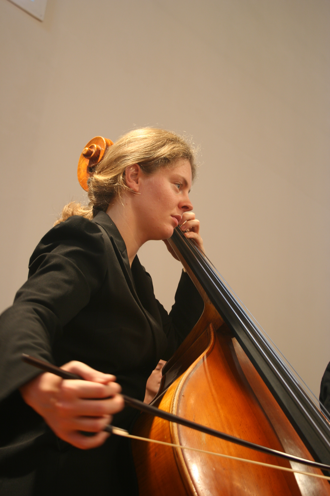

Spannungsfelder

Spannungsfelder ist eine Kammerkonzertreihe, die der Förderverein des Brandenburgischen Staatsorchesters Frankfurt (Oder) ins Leben gerufen hat. Im Mittelpunkt steht die Begegnung zwischen Publikum und Musikerinnen bzw. Musikern des BSOF in ungewöhnlichen, intimen Formaten – abseits des großen Konzertsaals.
Werke verschiedener Epochen begegnen zeitgenössischer Kammermusik. Die Nähe zwischen Musikerinnen, Musikern und Publikum ist das Herzstück des Formats – Gespräche, Fragen und gemeinsames Zuhören gehören dazu.
Cover und Projekttext werden zeitnah ergänzt.
Förderung durch den Förderverein BSOF: Alle Konzerte der Spannungsfelder-Reihe werden durch den Förderverein mitfinanziert. Mitglieder erhalten bevorzugten Zugang und werden persönlich eingeladen.
Mitmachen & Unterstützen
Als Mitglied des Fördervereins unterstützen Sie direkt Konzerte wie diese und erhalten exklusive Einladungen zu allen Spannungsfelder-Veranstaltungen.
Jetzt Mitglied werden